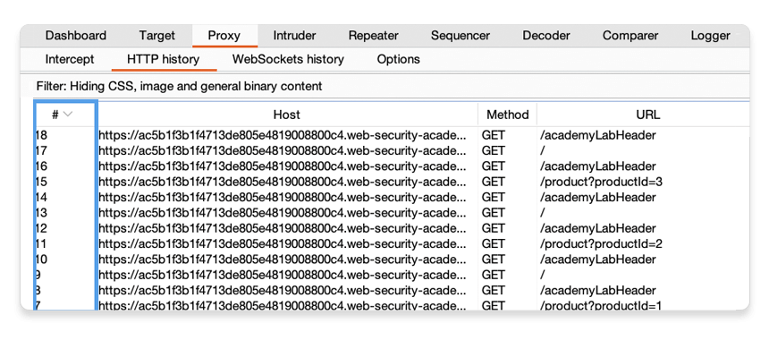
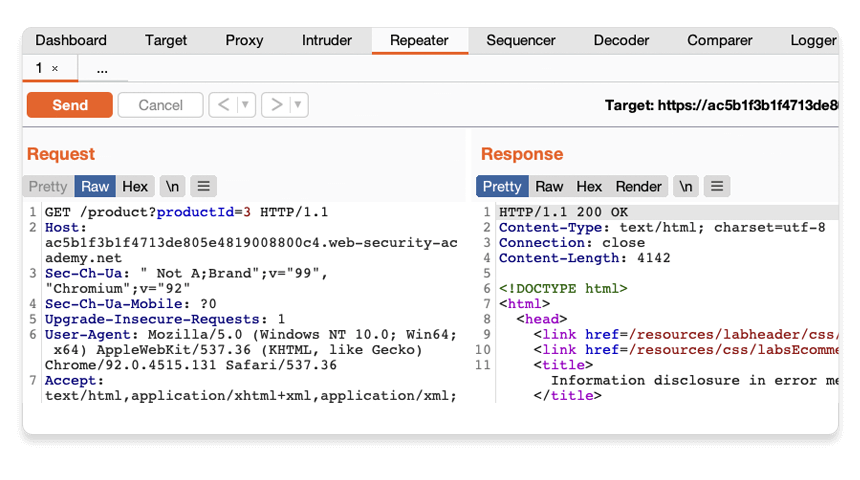
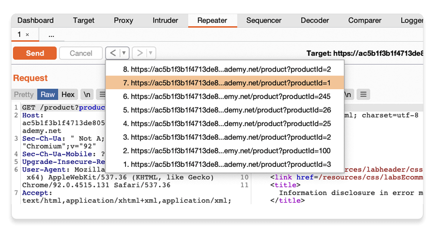
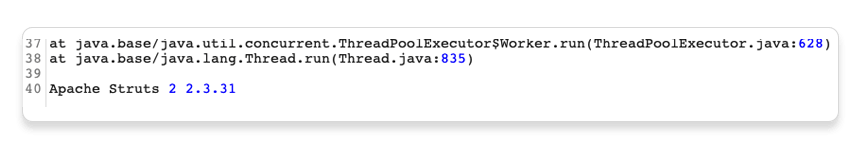
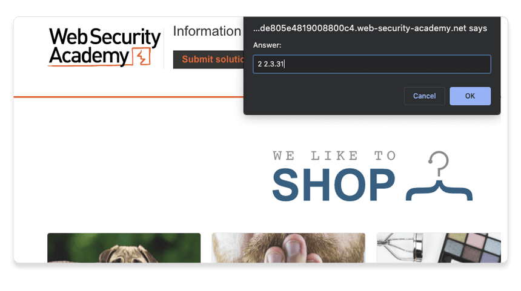

このチュートリアルでは、興味深いリクエストをBurp Repeaterを使って何度も繰り返し発行します。すると、リクエストのインターセプトを何度もしなくても、さまざな入力に対する対象Webサイトの反応を調べられます。これにより、脆弱性の調査や、Burp Scannerが発見した脆弱性の確認などが非常に簡単になります。
この先に進むにはportswigger.netのアカウントが必要です。まだ持っていない場合は、登録は無料で、Webセキュリティアカデミーへのフルアクセスが可能となります。
Burp Proxyの使い方についての前回のチュートリアルを終えていない場合は、先に進む前に済ませておくことを推奨します。
Burp Repeaterの最も一般的な使用方法は、Burpの他のツールからリクエストを送ることです。この例では、Burp ProxyのHTTP履歴からリクエストを送信してみます。
Burpブラウザを起動し、次のURLにアクセスします:
https://portswigger.net/web-security/information-disclosure/exploiting/lab-infoleak-in-error-messagesページが読み込まれたら、Access the labをクリックします。プロンプトが表示されたら、自分のportswigger.netのアカウントでログインしてください。数秒後、あなた専用の偽のショッピングサイトが表示されます。
ブラウザで、いくつかの製品ページをクリックしてサイトを探索します。
Burpで、Proxy > HTTP履歴タブを開きます。読みやすくするには、リクエストが降順でソートされるまで、左端の列ヘッダ(#)をクリックし続けます。すると、最新のリクエストが上に表示されます。

商品ページにアクセスするたびに、ブラウザはproductIdクエリパラメータを付けて、GET /productリクエストを送信していることに注目してください。
Burp Repeaterを使って、この動作をもっと詳しく見てみましょう。
GET /product?productId=[...]リクエストのどれかを右クリックし、Repeaterに送信を選択します。
Repeaterタブに移動すると、独自の番号のついたタブでリクエストが待機しています。
送信をクリックすると、リクエストが発行され、サーバからのレスポンスが表示されます。このリクエストは何度でも再送でき、その都度レスポンスが更新されます。
同じリクエストに毎回異なる入力をして再送すると、入力に基づくさまざまな脆弱性の発見や確認ができます。これは、Burp Suiteを使って手動テスト行う、最も一般的な作業の1つです。
productIdパラメータの数字を変更し、リクエストを再送します。大きめの数字など任意の数字を指定してみてください。
矢印を使うと、自分が送ったリクエストとそれに対応するレスポンスの履歴をさかのぼって確認できます。また、各矢印の横にあるドロップダウンメニューから、履歴内の特定リクエストにジャンプもできます。
これは、以前に送信したリクエストに戻って、特定の入力をさらに調査する場合に便利です。
レスポンスの内容を比較すると、IDを入力すると別の商品ページのリクエストはできますが、指定されたIDの商品を見つけられなかった場合、サーバがNot Foundレスポンスを返すことに注目してください。このページがどのように動作するかがわかったところで、想定外の入力に対してどのように反応するかを、Burp Repeaterを使って見てみましょう。
サーバは、このproductIdパラメータで整数値を受け取ることを期待しているようです。異なるデータタイプを送信するとどうなるか見てみましょう。
productIdを文字列にした別のリクエストを送信します。
整数ではないproductIdを送信すると、例外が発生するか確認してください。サーバから、スタックトレースを含む冗長なエラーレスポンスが送信されます。
レスポンスを見ると、WebサイトがApache Strutsフレームワークを使用していることや、そのバージョンもわかります。
実際のシナリオでは、このような情報が攻撃者にとって有用である場合があります。特に、そのバージョンに脆弱性があることが知られている場合はなおさらです。
Burpブラウザでラボに戻り、Submit solutionボタンをクリックします。レスポンスで判明したApache Strutsのバージョン番号を入力してください(2 2.3.31)。
おめでとうございます。これでまたひとつラボが増えましたね。これでBurp Repeaterを使ってWebサイトの一部を診断し、情報漏洩の脆弱性の発見に成功しました。
次のステップ - 初めてのスキャン実行 (Proユーザのみ)
次へ